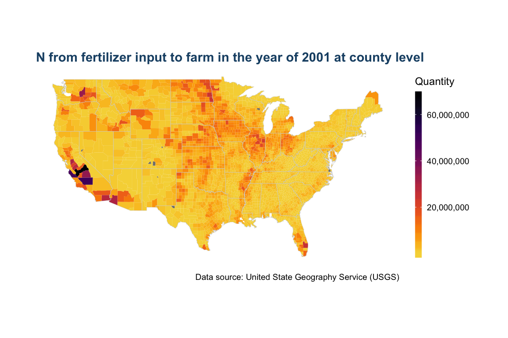
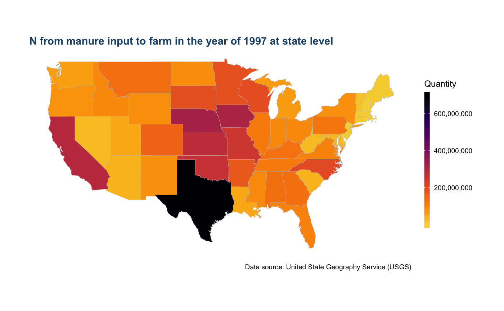
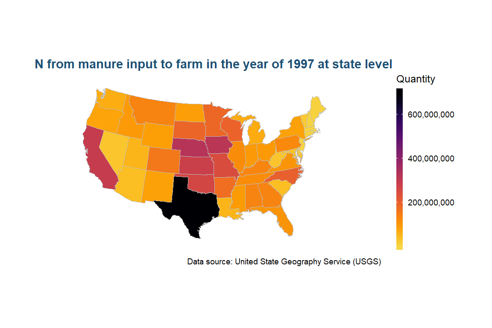
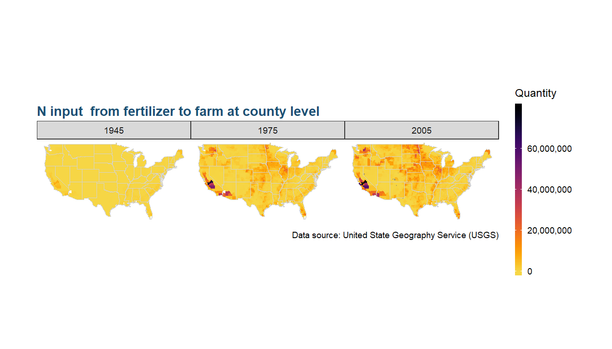

vignettes/US_maps.Rmd
US_maps.Rmdggfertilizer— title: “Visualize fertilizer data in U.S. maps” author: “Wenlong Liu” date: “2018-07-13” output: rmarkdown::html_vignette
vignette: > % % % —
# Initilize input parameters.
Year = 2001
Nutrient = "N"
Farm_Type = "farm"
Input_Type = "fertilizer"
level = "county"
# draw the map
us_plot <- map_us_fertilizer(data = data, Year = Year, Nutrient = Nutrient,
Farm_Type = Farm_Type, Input_Type = Input_Type,
viridis_palette = "inferno", level = level) +
ggtitle(paste(Nutrient, " from ", Input_Type, " input to ", Farm_Type, " in the year of ",Year,
" at ", level, " level",sep = ""))
us_plot
level = "state"
Year = 1997
Input_Type = "manure"
us_plot <- map_us_fertilizer(data = data, Year = Year, Nutrient = Nutrient,
Farm_Type = Farm_Type, Input_Type = Input_Type,
viridis_palette = "inferno", level = level) +
ggtitle(paste(Nutrient, " from ", Input_Type, " input to ", Farm_Type, " in the year of ",Year,
" at ", level, " level",sep = ""))
us_plot
We can also change the projection system of the map to “albers” projection.
us_plot +
ggtitle(paste(Nutrient, " from ", Input_Type, " input to ", Farm_Type, " in the year of ",Year,
" at ", level, " level",sep = ""))+
coord_map("albers",lat0=39, lat1=45)
Year = c(1945, 1975, 2005)
facet = "Year"
nutrient = "N"
Input_Type = "fertilizer"
level = "county"
us_plot <- map_us_fertilizer(data = data, Year = Year, Nutrient = Nutrient,
Farm_Type = Farm_Type, Input_Type = Input_Type,
viridis_palette = "inferno", level = level,
facet = facet) +
ggtitle(paste(Nutrient," input "," from ", Input_Type, " to ", Farm_Type,
" at ", level, " level",sep = ""))
us_plot